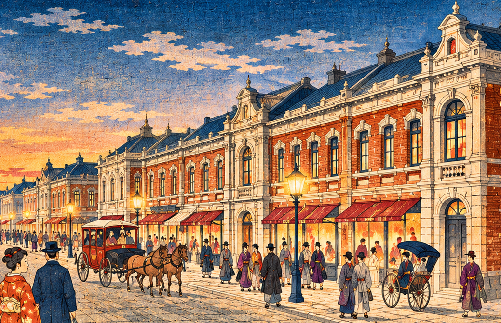
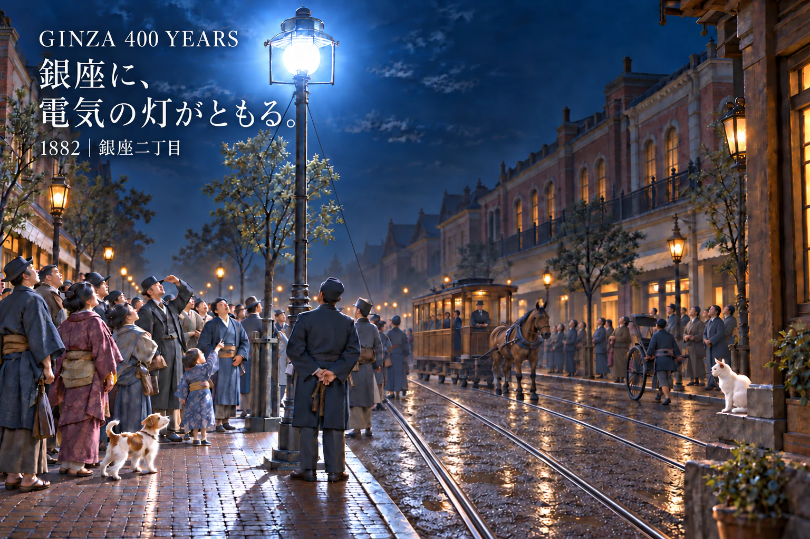

GINZA WHISKERS ORIGINAL SERIES
GINZA 400 YEARS
Created by GINZA DIGITAL ART LAB
銀座400年の時間旅行へ。
江戸から明治、昭和、そして未来へ。
銀座の街に刻まれた物語をたどる。
INTRODUCTION
銀座の時間を旅する
江戸から明治、大正、昭和、平成、そして未来へ。
GINZA 400 YEARSは、銀座の街に刻まれた歴史と、人々が紡いできた物語を、AIによる歴史イメージアートとともにたどる全12話のシリーズです。
時代ごとに姿を変えながら、受け継がれてきた銀座の魅力。
現在公開中の物語から、400年の時間旅行をお楽しみください。
EPISODES
物語を選ぶ
全12話｜現在3話公開中・順次公開予定
- EPISODE 01｜1612
- EPISODE 03｜1872–1877
- EPISODE 04｜1882
EPISODE 01
1612
江戸に、銀座の灯がともる。
1612｜新両替町
1612年、江戸の銀座役所が駿府から移され、新両替町として歩み始めた頃。夕暮れの町に提灯がともり、商いと人の往来が静かに息づく、銀座という街の原点を描いたAI復元アートです。
史料・史実をもとに構成したAI復元イメージです。
EPISODE 03
1872–1877
銀座に、西洋への憧れの灯がともる。
1872–1877｜銀座煉瓦街
明治5年の大火をきっかけに、銀座・築地一帯が煉瓦造りの街へ生まれ変わっていった時代。洋風の建物が並ぶ通りに、江戸から続く商いと暮らしがそのまま入り込んでいく、変化の途中の銀座を描きます。
史料・史実をもとに構成したAI復元イメージです。

EPISODE 04
1882
銀座に、電気の灯がともる。
1882｜銀座二丁目
1882年、銀座二丁目にアーク灯がともり、ガス灯の時代から電気の光へ。雨に濡れた煉瓦街と複線の馬車鉄道、人々が見上げた文明開化の一夜を描いたAI復元アートです。
史料・史実をもとに構成したAI復元イメージです。
Digital Edition
デジタル版
準備中
GINZA 400 YEARS の作品は、今後デジタル版としての提供を予定しています。 価格・購入方法は、準備が整い次第あらためてご案内します。
400年の旅から、今日の銀座へ。
GINZA WHISKERS トップへ